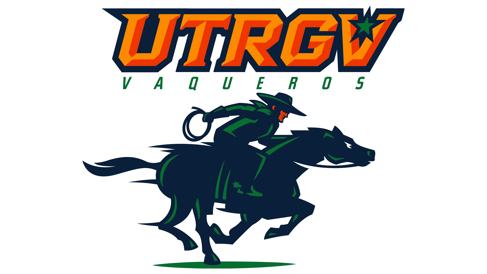
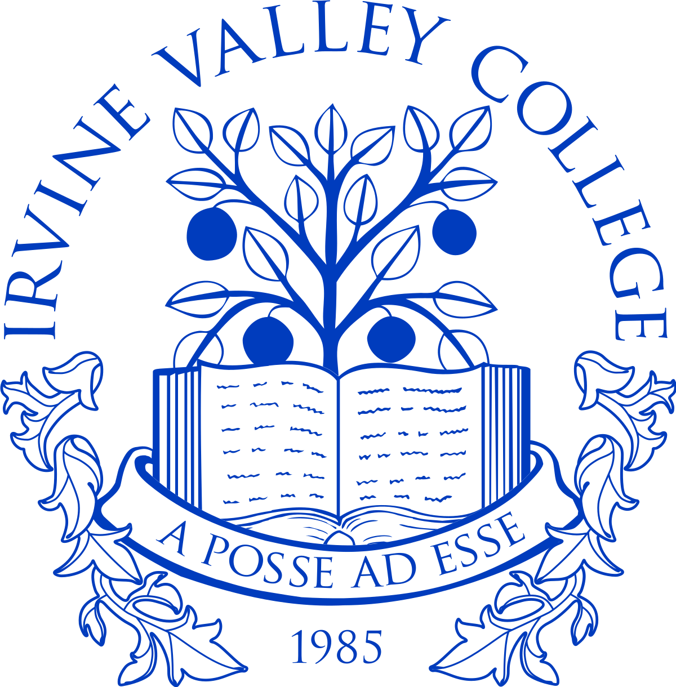
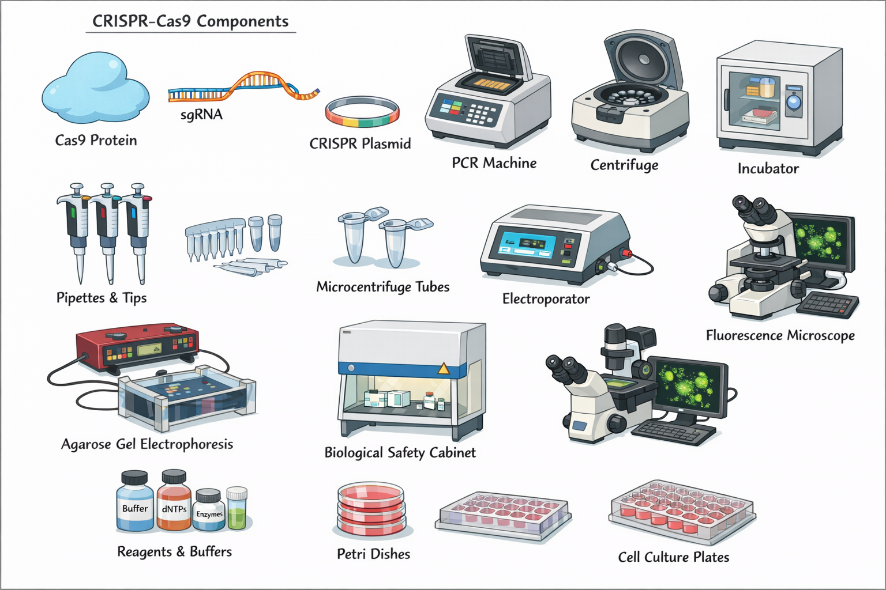
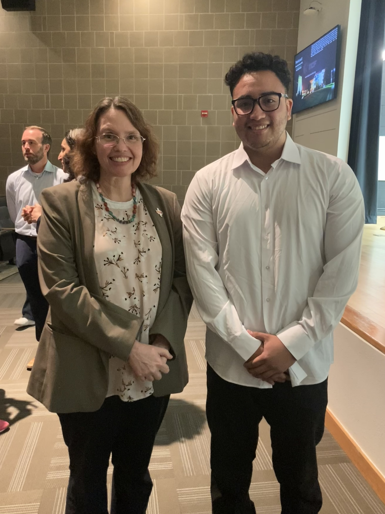
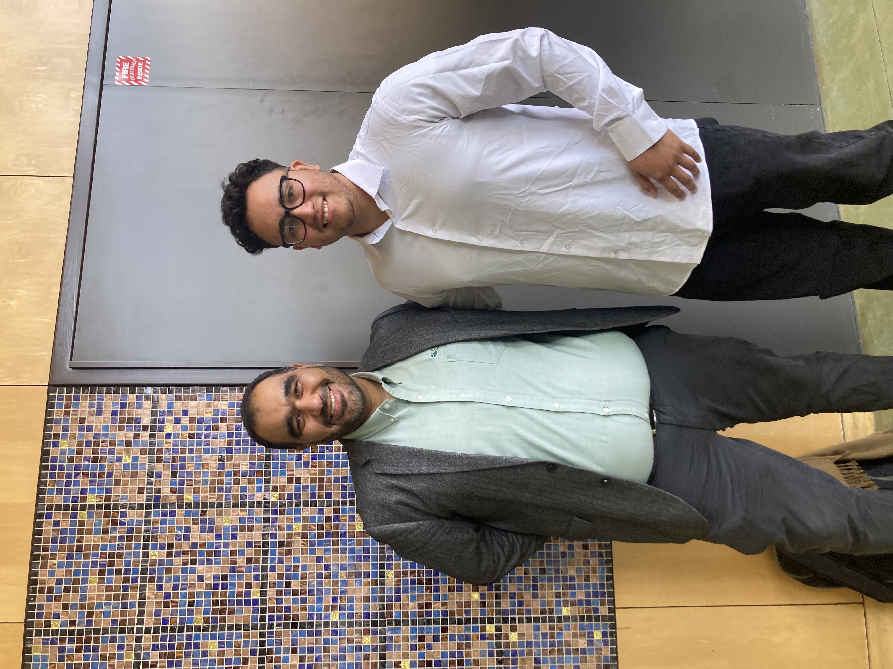
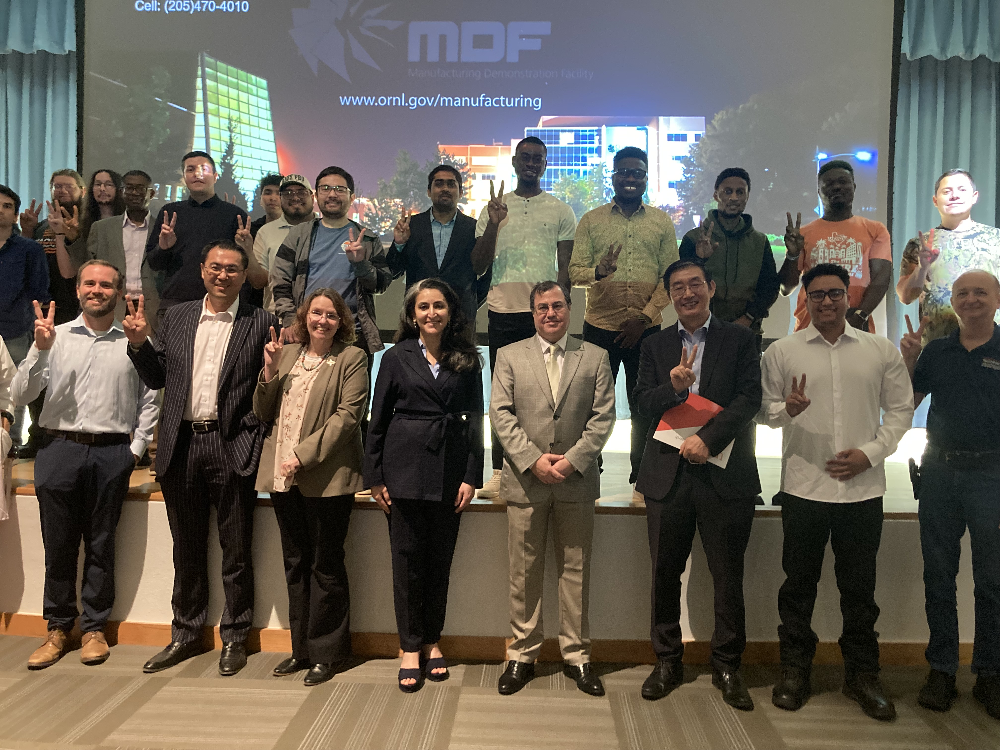

Path to Becoming a Geneticist | Genome Engineering & CRISPR-Cas9
UTRGV student currently completing Biology I and Chemistry II, building foundational knowledge in genetics and molecular biology. Long-term objective: specialization in genome editing, CRISPR-Cas9 systems, and applied genetic research.
CRISPR-Cas9 enables precise genome editing by using guide RNA to direct the Cas9 enzyme to a specific DNA sequence, where it introduces a double-strand break. Repair occurs through NHEJ (gene disruption) or HDR (precise correction).

Diagram of common instruments and components used in CRISPR-Cas9 workflows.
Embedded for educational purposes. Credit to original creators.
Attended Oak Ridge National Laboratory research presentation at UTRGV.

Discussed pathways toward undergraduate research in molecular genetics and genome editing.

Discussed research environments within national laboratories and biotechnology applications.

Email: mark250gonzalez@gmail.com
LinkedIn: linkedin.com/in/mark-gonzalez-858167266
Live lookups use NCBI, GBIF, Ensembl, and UniProt. Missing records are labeled unavailable. Nothing is invented. Notes are stored in this browser only.
NCBI Taxonomy + GBIF
NCBI Gene + UniProt
Saved locally
Evidence-label checklist (no wet-lab protocols)
Sequence viewer + BLAST/Ensembl/UCSC/PDB links
Project notes in this browser
Computational plans only
Choose a group, then search NCBI Taxonomy. Click a species for taxonomy, genome links, and GBIF images when available. Parasite is a lifestyle, not a kingdom, so that list uses well-known parasitic species from NCBI.
Ability tags are keyword matches on UniProt/NCBI text and are labeled predicted or unknown — not experimental proof from this site.
This GitHub Pages file cannot call OpenAI. Use this checklist so answers stay honest. Do not treat gene combinations as proven enhancements. No wet-lab editing protocols.
1. Look up each gene on NCBI Gene, Ensembl, and UniProt.
2. Copy identifiers. If a field is missing, write unavailable.
3. Label functions from those records as confirmed (stated in the database), predicted (computational annotation), or unknown.
4. For literature, search PubMed and cite PMIDs.
5. Lab work stays with approved institutional protocols.
NCBI BLAST · Ensembl · UCSC Genome Browser · UniProt · RCSB PDB · Primer-BLAST (educational)
Educational computational plans only. Requests that look like wet-lab genome editing are not generated here.